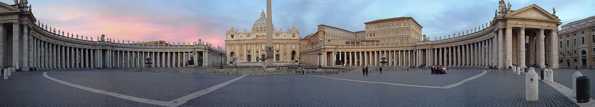

Vatican City
The territory of Vatican City is part of the Mons Vaticanus (Vatican Hill), and of the adjacent former Vatican Fields, where St. Peter's Basilica, the Apostolic Palace, the Sistine Chapel, and museums were built, along with various other buildings. The area was part of the Roman rione of Borgo until 1929. Being separated from the city on the west bank of the Tiber, the area was a suburb that was protected by being included within the walls of Leo IV, later expanded by the current fortification walls of Paul III/Pius IV/Urban VIII. When the Lateran Treaty of 1929 that created the Vatican state was being prepared, the boundaries of the proposed territory were influenced by the fact that much of it was all but enclosed by this loop. For some tracts of the frontier, there was no wall, but the line of certain buildings supplied part of the boundary, and for a small part of the frontier a modern wall was constructed. The territory includes Saint Peter's Square, separated from the territory of Italy only by a white line along the limit of the square, where it borders Piazza Pio XII. St. Peter's Square is reached through the Via della Conciliazione, which runs from the Tiber to St. Peter's. This grand approach was designed by architects Piacentini and Spaccarelli, for want of Benito Mussolini and in accordance with the church, after the conclusion of the Lateran Treaty. According to the Lateran Treaty, certain properties of the Holy See located in Italian territory, most notably the Papal Palace of Castel Gandolfo and the major basilicas, enjoy extraterritorial status similar to that of foreign embassies.